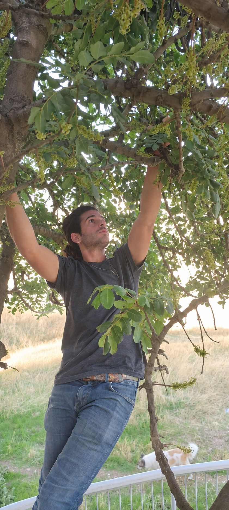

The name in the header, large opening titles, section titles, product and workshop names, video titles and treatment-package price highlights.
Currently: Cinzel DecorativeFind the voice
that feels like you.
18 fonts to compare. Three roles to choose. Try one family everywhere, or mix a characterful heading with quieter text.
12 serif fonts + 6 sans-serif fonts = 18 choicesHow fonts are shared across the site
A font role repeats across all five pages. You can choose one font per role; you don’t need to choose a different font for every page or section.
Story paragraphs, product descriptions, workshop details, form labels, footer text, ordinary links and most text buttons.
Currently: RalewayHeader navigation, the small “Clinical Herbalist” subtitle, language switch, and text entered in form fields.
Currently: Cormorant GaramondVideo descriptions and the “Show more” button also follow the Body role. The Hebrew logo is image artwork and doesn’t change with a font selection.
Try your combination
Your choices only affect this preview.
Oren Emanuel ShoshanaHomeHerbal careProductsWorkshops
Clinical herbalism, foraging & natural preparations
A little closer to nature.
Every plant has its season. Every preparation has its rhythm. Discover thoughtful herbal care, seasonal preparations and hands-on experiences rooted in the Galilee.

Care, shaped around you.
We begin with a conversation about your daily life, making space for attention, curiosity and a gentler pace.
A sample field — nothing is submitted.
The collection
Compare all 18 fonts
Serif fonts have small finishing strokes and a more literary feel. Sans-serif fonts have simpler strokes. The 17 web fonts need an internet connection; Georgia is a system font. Each card reports whether its real font loaded.
Showing 18 fonts